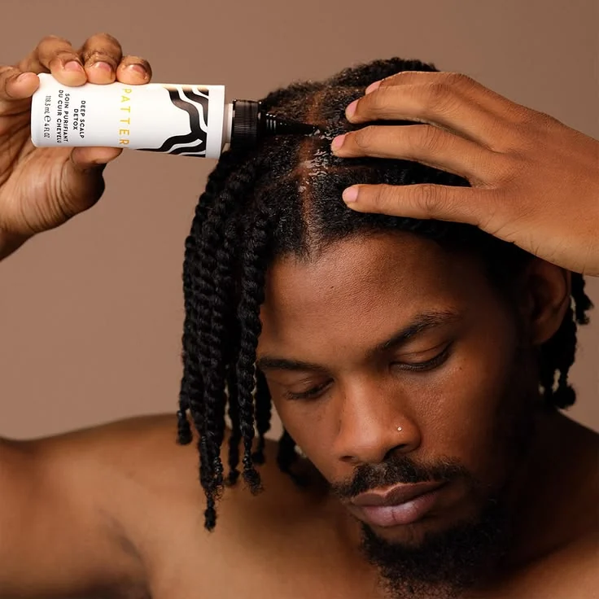

Digital Scalp Analysis
Micro-imaging of density, sebum, flaking and follicle health to build your baseline.
Book this ↗Six signature protocols, each beginning with analysis so you only get what your scalp needs.

Micro-imaging of density, sebum, flaking and follicle health to build your baseline.
Book this ↗
Clarifying exfoliation and soothing care that lifts build-up without stripping coils.
Book this ↗Nutrient serums and scalp stimulation to support the natural growth cycle.
Book this ↗
Moisture-first routine for afro, curly and coily hair: scalp care, oiling and protective-style guidance.
Book this ↗

Relaxed, unhurried and tailored. You leave with a clear plan and a routine you can actually follow.
Book analysis ↗Goals, history and lifestyle.
Scalp micro-imaging.
Your protocol and timeline.
First treatment and routine.
Yes, our protocols are built with coily, curly and protective-styled hair in mind, including tension and dryness concerns.
Scalp comfort can improve within weeks; visible hair changes follow the growth cycle and usually take 3–6 months.
Scalpx offers cosmetic and wellness scalp care. For suspected medical conditions we recommend seeing a dermatologist.
No, you can book as a guest. An account lets you track consultations and your routine in your dashboard.